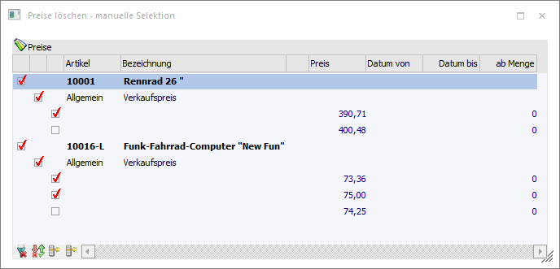
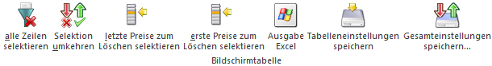

Das Fenster "Preise löschen - manuelle Selektion" wird geöffnet, wenn im Fenster Preiswartung (Register "Preise prüfen") die Option "Löschvariante" auf "0 - manuell" gestellt wurde und der ausgelöste Prüflauf ein Ergebnis bringt.
Innerhalb des Fensters kann dann selektiv entschieden werden, welche mehrfachvorhandenen /oder überschneidenden Preise gelöscht werden sollen.

Im ersten Schritt werden alle mehrfachvorhandenen oder überschneidenden Preise lt. Einschränkung in der Preiswartung angezeigt, wobei in der obersten Ebene die Artikel angezeigt werden. Darunter werden die Preislisten angezeigt und dann erst die Mehrfachpreise eines Preistyps.
Zu jeder Ebene gibt es eine eigene Spalte mit einer Checkbox, welche die Ebene symbolisiert. Damit ein Preiseintrag gelöscht wird, muss bei der entsprechenden Zeile die dazugehörige Checkbox aktiviert werden. Wird das gemacht, so werden zusätzlich auch die nächsthöheren Ebenen ebenfalls selektiert.
Hinweis
Wird die Option in der Preislistenebene aktiviert, werden alle in dieser Ebene vorhandenen Preise selektiert. Der Artikel selbst bekommt auch ein Häkchen - was aber nicht bedeutet, dass alle Preislisten des Artikels sondern nur die aktivierten gelöscht werden.
Wird die Checkbox in der obersten Ebene (Artikel) aktiviert, werden alle darunterliegenden Einträge auch selektiert - damit würden alle Preise gelöscht werden.
Tabellenbuttons

Ø alle Zeilen selektieren
Durch Anklicken des Buttons "alle Zeilen selektieren" werden alle in der Tabelle befindlichen Preise aktiviert und somit zur Löschung vorgesehen.
Ø Selektion umkehren
Durch Anklicken dieses Buttons wird die Selektion ins Gegenteil gekehrt.
Ø letzte Preise zum Löschen selektieren
Wurde die Option "letzte löschen" gewählt, so werden die zuletzt erfassten Preise markiert, wobei sich die Reihenfolge nach der Erfassung der Preise richtet. Der zuerst erfasste Preis bleibt deaktiviert - wird also nicht gelöscht.
Ø erste Preise zum Löschen selektieren
Wurde die Option "erste löschen" gewählt, so werden die zuerst erfassten Preise markiert, wobei sich die Reihenfolge nach der Erfassung der Preise richtet. Der zuletzt erfasste Preis bleibt deaktiviert.
Ø Ausgabe Excel
Durch Anwahl des Buttons "Ausgabe Excel" wird der Inhalt der Tabelle an Microsoft Excel übergeben.
Ø Tabelleneinstellungen speichern
Die Spalten einer Tabelle können grundsätzlich an beliebige Positionen verschoben, bzw. in der Breite entsprechend angepasst werden. Durch Anwahl des Buttons "Tabelleneinstellungen speichern" werden die Einstellungen benutzerspezifisch gespeichert und bei dem nächsten Aufruf des Programmpunktes wieder vorgeschlagen.
Ø Gesamteinstellungen speichern
Im Gegensatz zu "Tabelleneinstellungen speichern" können mit "Gesamteinstellungen speichern" mehrere Tabellenaufbauten gespeichert und nach Wunsch geladen werden. Zusätzlich werden Sonderfunktionen der Tabelle (z.B. "Spalte gruppieren") ebenfalls bei der Speicherung bedacht.
Buttons
Ø Löschen
Durch Anklicken des Buttons "Löschen" bzw. der Taste F5 werden selektierten die Preise, nach einer nochmaligen Abfrage, gelöscht.
Ø Ende
Durch Drücken des Buttons "Ende bzw. der ESC-Taste wird das Fenster geschlossen.